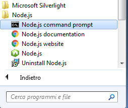
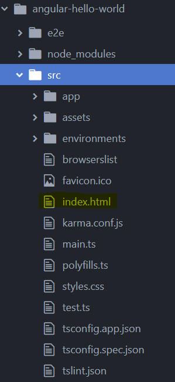
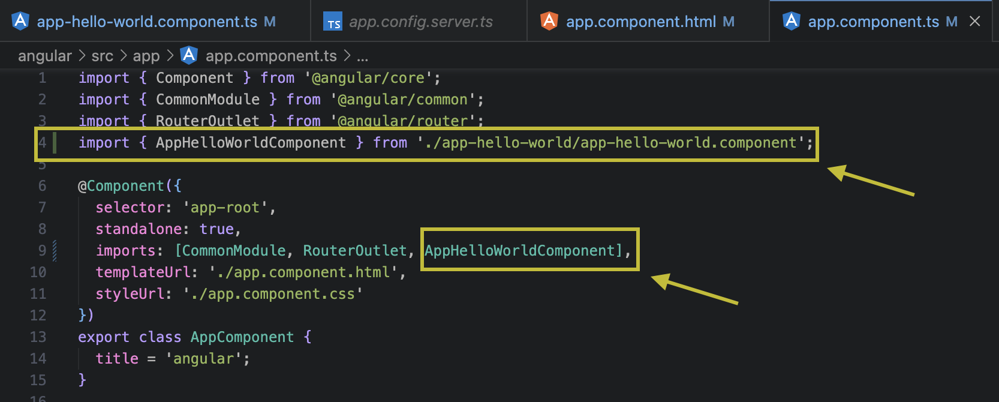
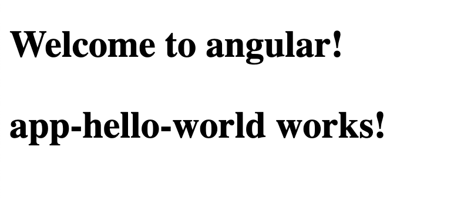
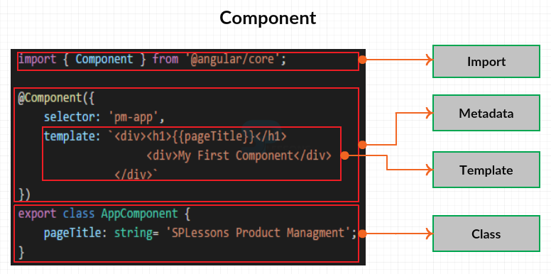
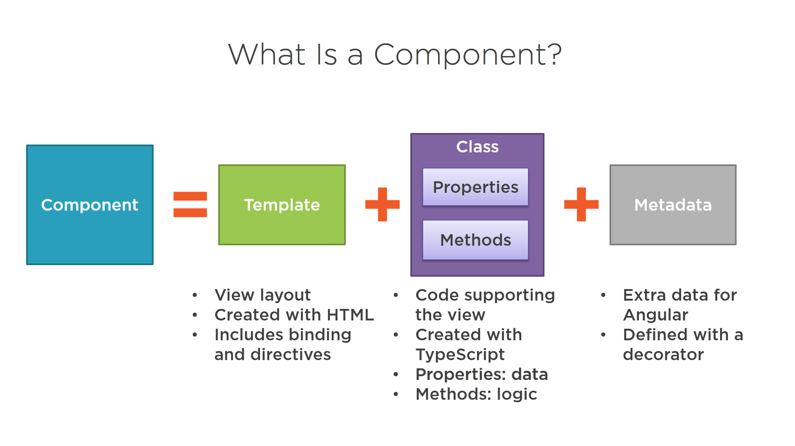
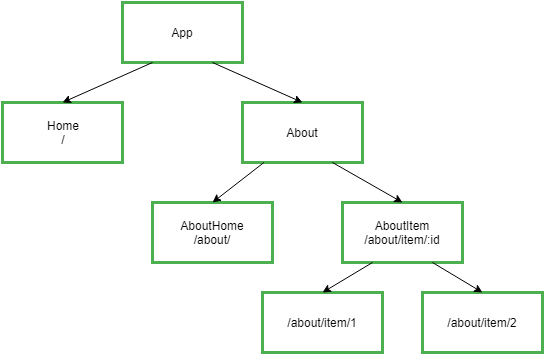

Example Project
Esegui il comando ng new per creare un nuovo progetto da zero (il progetto verrà creato nella cartella corrente).
$ ng new angular-hello-world |

- Non aggiungete l’Angular Routing (per ora non ci serve)
- Usate come stile i css
Girerà per un po’ mentre installa le dipendenze di npm. Una volta finito vedremo:
$ Project 'angular-hello-world' successfully created. |
Controlla i file generati (Importa la cartella in un editor di testo se sei in locale) ci sono molti file! Non preoccuparti di comprendere tutto ora.
Per ora siamo interessati alla cartella src, dove metteremo tutto il codice dell’applicazione.
Apri la pagina Index.html e dovresti trovare del codice già generato (qualcosa del genere):
<!doctype html>
<html lang="en">
<head>
<meta charset="utf-8">
<title>AngularHelloWorld</title>
<base href="/">
<meta name="viewport" content="width=device-width, initial-scale=1">
<link rel="icon" type="image/x-icon" href="favicon.ico">
</head>
<body>
<app-root>Loading ...</app-root>
</body>
</html> |
Il tag app-root è il luogo in cui verrà renderizzata la nostra applicazione. Il testo “Loading …” è un segnaposto
che verrà visualizzato prima del caricamento del codice dell'app. Ad esempio, potremmo inserire un "spinner" di caricamento attraverso un tag img qui e l'utente vedrebbe quest’immagine mentre Angular sta caricando.
Ma cos’è il tag app-root e da dove proviene? app-root è un componente definito
dalla nostra applicazione Angular. In Angular possiamo definire i nostri tag HTML e assegnargli
funzionalità personalizzate. Il tag app-root sarà il "punto di ingresso" per la nostra applicazione sulla pagina.
Proviamo a lanciare questa app così com'è e poi indagheremo per vedere come viene definito questo componente.
Running the application
Prima di apportare modifiche, carichiamo la nostra app dall'applicazione generata nel browser.
La CLI Angular ha un server HTTP integrato che possiamo usare per eseguire la nostra app.
Per usarlo, torna al terminale e cambia le directory nella root della nostra applicazione.
1 $ cd angular-hello-world
2 $ ng serve
3 ** NG Live Development Server is running on http://localhost:4200. **
4 // ...
5 // a bunch of other messages
6 // ...
7 Compiled successfully. |
La nostra applicazione è ora in esecuzione sulla porta 4200. Apriamo il browser e visitiamo:
http: // localhost: 4200 (L’opzione --open dovrebbe aver aperto il browser automaticamente)
Rispondi alle domande
- Qual è il comando per installare la angular CLI?
- Cosa contiene la pagina index.html?
- Cos’è l’app-root?
- Come si avvia un progetto angular?
Part 2 - Making a Component
Una delle grandi idee dietro Angular è l'idea di componente.
Nelle nostre app, scriviamo il codice HTML che diventerà la nostra applicazione interattiva, ma il browser comprende solo una serie limitata di tag di markup; come <img>, <form> o <video>. Questi tag hanno funzionalità definite dal creatore del browser.
Cosa succede se vogliamo insegnare al browser nuovi tag? E se volessimo avere un tag <weather> che mostra il tempo? O se volessimo creare un tag <login> che mostri un pannello di login?
Questa è l'idea fondamentale alla base dei componenti: insegnare al browser nuovi tag che hanno funzionalità personalizzate ad essi connessa.
Per creare un nuovo componente utilizzeremo la Angular CLI, attraverso il comando ng generate.
1 $ ng generate component hello-world
2 installing component
3 create src/app/hello-world/hello-world.component.css
4 create src/app/hello-world/hello-world.component.html
5 create src/app/hello-world/hello-world.component.spec.ts
6 create src/app/hello-world/hello-world.component.ts |
Definire un componente
Per definire un componente servono tre cose
- Dichiarare le dipendenze [import]
- Un decoratore [@Component]
- La definizione di una classe [export Class{....}]
Apri il file del componente appena creato (si tratta di un file TypeScript)
file: src/app/hello-world/hello-world.component.ts.[1]
import { Component, OnInit } from '@angular/core'; //Molto simile alle import in Java
@Component({
selector: 'app-hello-world',
templateUrl: './hello-world.component.html',
styleUrls: ['./hello-world.component.css']
})
export class HelloWorldComponent implements OnInit {
constructor() { }
ngOnInit() {
}
} |
Component Decorators
Dopo aver dichiarato le dipendenze con import (per ora non ci preoccupiamo troppo di cosa importare)
import { ... } from '...';
Viene dichiarato il componente
Possiamo pensare ai decoratori come dei metadati aggiunti al codice. Usando @Component sulla classe HelloWorld, “rendiamo” HelloWorld un componente.
Se vogliamo usare il componente come un tag html (es: <app-hello-world>) allora dobbiamo configurarlo e specificando il selector
@Component({ selector: 'app-hello-world'
// ...
}) |
Specifichiamo un templateUrl (es: ./hello-world.component.html.).
@Component({ selector: 'app-hello-world' templateUrl: './hello-world.component.html', // ...
}) |
In pratica stiamo dicendo ad Angular di copiare il codice che trova nel file ./hello-world.component.html ogni volta che viene scritto il tag <app-hello-world>.
Apri il file hello-world.component.html per vedere cosa c’è al suo interno
<p>
hello-world works!
</p> |
Infine specifichiamo ad Angular dove reperire il foglio di stile che modificherà l’aspetto del template
@Component({
selector: 'app-hello-world',
templateUrl: './hello-world.component.html',
styleUrls: ['./hello-world.component.css']
}) |
Potresti aver notato che lo styleUrls è diverso dal template in quanto accetta un array
come argomento. Questo perché possiamo caricare più fogli di stile per un singolo componente.
NB: generando il component con il comando ng g c app-hello-world il decoratore dovrebbe essere il seguente:
@Component({
selector: 'app-app-hello-world',
standalone: true,
imports: [],
templateUrl: './app-hello-world.component.html',
styleUrl: './app-hello-world.component.css'
})
standalone e imports devono essere lasciati all’interno del decoratore: vedremo a cosa servono in seguito.
Loading Our Component
Ora che abbiamo il nostro primo codice componente compilato, come lo carichiamo nella nostra pagina?
Se visitiamo nuovamente la nostra applicazione nel browser, vedremo che non è cambiato nulla. Questo perché abbiamo solo creato il componente, ma non lo stiamo ancora utilizzando.
Per cambiare la pagina, dobbiamo aggiungere il nostro tag componente a un modello già esistente (In questo caso l’app component che è il componente principale di un’applicazione Angular).
Apri il file: angular-hello-world/src/app/app.component.html
Ricorda che poiché abbiamo configurato il nostro HelloWorldComponent con il selector app-hello-world, possiamo utilizzare <app-hello-world> </ app-hello-world> nel nostro modello.
Aggiungiamo il tag <app-hello-world> a app.component.html :
<h1>
Welcome to {{ title }}!
<app-hello-world></app-hello-world>
</h1> |
Dopo aver modificato app.component.html occorre modificare il file app.component.ts per importare il componente che abbiamo creato, sennò non potrà essere usato.
Per farlo occorre modificare il decoratore @Component: nell’array del campo imports aggiungiamo il nome della classe del componente che abbiamo appena creato.
Infine (se non viene fatto in automatico da Gitpod) importiamo il componente dentro il file .ts.

Ora la tua pagina dovrebbe essere così:

Cos’è dunque un componente?

Vedremo come un’applicazione Angular non è altro che una gerarchia (o albero) di componenti.

Rispondi alle Domande
- Come si crea un nuovo componente?
- A cosa serve il codice import?
- A cosa serve i decoratore @Component?
- A cosa serve specificare il templateUrl?
- Lo styleUrl?
- Il selector?
- Come si aggiunge un nuovo componente all’app component?
- Scrivi sul quaderno uno schema che contenga il codice di un componente e di tutti i file a cui fa riferimento
- A cosa serve il simbolo {{ }} nel template html?
- Da cosa è composta un’applicazione Angular?
- Qual è la convenzione per la nomenclatura dei seguenti file che costituiscono un componente.
- nome del componente
- nome del template html
- nome del template css
(fai un esempio)
[1] Nota come i file TypeScript abbiano suffisso .ts . I Browser non sono in grado di interpretarli, ma il comando serve della console Angular traduce automaticamente(Live compile) i file da ts a js